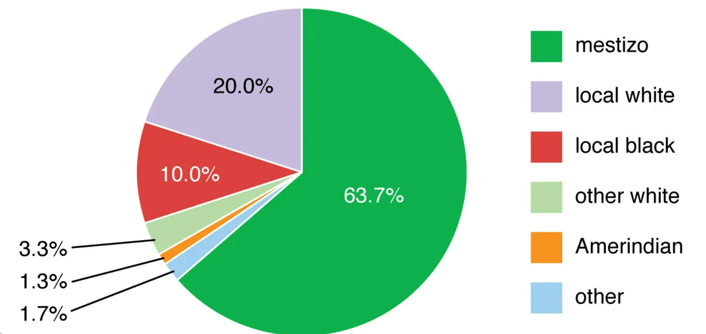
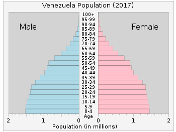

| Quick Facts | Home | Pictures | Information |
Immigration and Ethnic Composition
| Venezuela is an immigrant nation. About one-fifth of Venezuelans are
of European origin, while one-tenth are mostly of African heritage. The
remaining two-thirds of the population are either mulatto-mestizo
(African, European, and indigenous) or mestizo (of mixed European and
indigenous [Amerindian] ancestry). In terms of statistics, the native
population is modest. Venezuela has never publicly promoted non-Hispanic immigration until 1948, with the exception of a small number of shipments of traders, seamen, and businesspeople from nearby West Indian islands. |
 Pie-chart of the Ethnic Composition in Venezuela |
|
 Demographics of Venezuela |
But as the petroleum business expanded,
the government made an effort to draw in a larger demographic. Venezuela
hired skilled labourers and agricultural workers from Spain, Italy, and
Portugal during a 10-year era of unrestricted immigration (1948–1958);
concurrently, migration from Colombia to Venezuela grew. During that
time, around a million immigrants arrived in the nation; however, many
of them later left. The government strengthened immigration restrictions after 1958 in order to give preference to foreign nationals with advanced skills; yet, Colombian labourers continued to enter the rural economy in the 1960s, taking the place of Venezuelans who were abandoning their fields for urban areas. |
| Typically, ethnic
groupings are associated with certain geographical areas. Most European
and mestizo Venezuelans are found in the country's largest cities in the
north. Along the Caribbean coast, mulatto-mestizo communities and people
with African descent predominate. The disparity in the rates of intermarriage between the indigenous and Hispanic populations in the two areas accounts for the physical differences between many mestizos from the lowlands and those from the highlands. There are about 38 different Amerindian peoples living in Venezuela, according to government figures. The largest indigenous tribe is the Warao (Warrau), followed by the Goajiro (Wayuu). |
| Page 1 | Page 2 | Page 3 | Page 4 | Page 5 | Page 6 | Page 7 |